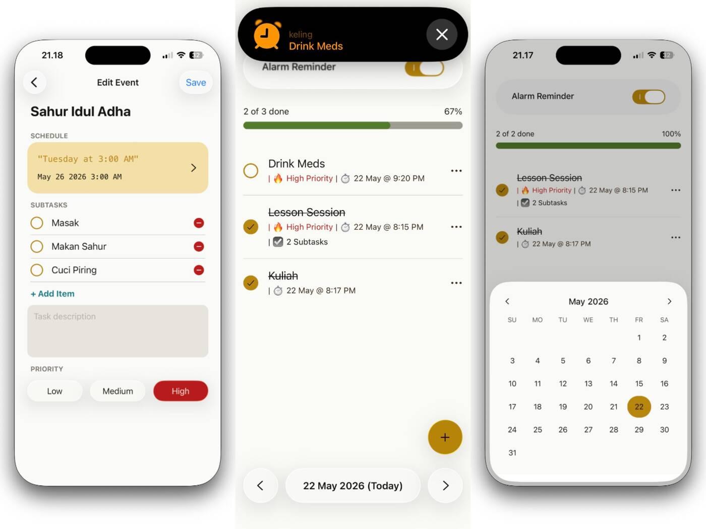
Building Keling: A Fine-Grained iOS Alarm App with AlarmKit
24 May 2026
Proposal only. No application code changed. Nothing under src/, config, the Durable Object, Cloudflare or production was touched, and nothing was deployed.
This report is docs/redesign/koran/index.html. Its assets sit beside it: thumbnails and heroes scaled down from src/assets/ and src/content/blog/hero-images/, the GitHub avatar from AUTHOR_AVATAR, a photo from the Banjarnegara article, and map-couvee.jpg, a crop of Kopimap’s printed map at Couvee Solo. Titles, dates, ratings, the Couvee shop and its two comments are real, read on 29 October 2026 from the repo, https://mwyndham.dev and https://kopimap.mwyndham.dev/api/coffees (21 articles, 3 reviews). The numbers, chart and moderation comments in section 10 are illustrative.
The design language is Nota as it shipped on Kopimap: the same tokens, materials, type, shape rules and motion. Only the objects are new.
Marknotes becomes the newspaper on the same counter. At a warung kopi the koran lies on the counter for whoever sits down, and Kopimap’s review clipping is cut from it. The front page is a broadsheet, the archive is a receipt printed from the till, each article is a sheet of newsprint, a coffee review has its shop’s ticket stapled to it, and a comment is written on the pink carbon nota and filed as a thermal slip. Everything is paper, ink and steel, and every edge is cut square or torn.
card bg-base-100 shadow-xl (src/layouts/BlogPost.astro:17, src/pages/index.astro, src/pages/articles/index.astro) on a dotted engineering grid with a blue wash (src/layouts/BaseLayout.astro:23-24). The nav is a floating rounded bar (src/pages/_components/Header.astro:7) whose current page is a blue btn btn-accent pill (HeaderLink.astro). Nothing on screen is about coffee, Solo or the person writing, and Kopimap, one click away, now looks like another product.ARTICLE_PROSE_CLASS (src/consts.ts:5-6) makes bold primary green, italic secondary and links accent blue, then corrects all three with brightness filters. Primary is green by day (src/styles/global.css:23) and coral red by night (global.css:59), so the same bold word changes hue with the OS. The dark theme is daisyUI’s navy “sunset” base (global.css:54-55), not a neutral.FormattedDate.astro:11 calls toLocaleDateString with no time zone. pubDate: "Jun 22 2025" is parsed as midnight on a UTC+7 machine, stored as 2025-06-21T17:00:00.000Z, and printed in UTC. The live Couvee page says Jun 21, 2025, and Building Keling says May 23, 2026 against May 24 in its file. This is a one-line fix, timeZone: "Asia/Jakarta", and it is step 1 below.ArticleThumbnail.astro:22-32) gives all of them the same rounded 128px photo, title and date. The rating only appears inside the shop block, below the fold.src/components/ShopBlock.tsx draws daisyUI stars in accent blue (:66-75), soft success and warning badges (:96-100), a green and a blue outline button, and a stock MapLibre teardrop (:36) on the alidade_smooth style (:30). On Kopimap the same shop is a mint ticket with a red Reviewed chop, a cup card and a square stamp on the printed map.max-h-64 object-cover (BlogPost.astro:26) crops every hero to a band: GORM’s hero is a code screenshot cut mid-line, Keling’s is three app screens cut at the waist.BlogPost.astro:44), and section heads use the same face. Nothing marks where an article starts except size.CommentItem.tsx:38), a third smaller than the article. Replies sit on bg-accent/5, /10, /15 rounded tints (:60-66). Identicons are full-hue (Avatar.tsx:13) in squircle masks (:16), and Author is a green soft pill.btn-circle buttons, green and black, sit fixed bottom-right on every article (ScrollButtons.astro:9,18) and cover line ends on phones.Header.astro:39,56), and on phones the five links sit behind a hamburger dropdown.--radius-selector: 2rem, --radius-field: 1rem, --radius-box: .5rem (global.css:39-41), plus rounded-box and rounded-lg on thumbnails, photos and replies.Koran is Indonesian for newspaper. It is the paper object every warung kopi already has, so Marknotes joins Kopimap on the same counter instead of borrowing a second metaphor. One source of objects keeps it coherent; anything with no object stays plain type.
| Object on the counter | What it is in Marknotes | Material |
|---|---|---|
| The till | The site’s keys: Home, Blog, Kopimap, Resume. The current section’s key is latched. | Perforated graphite, aluminium keys, LEDs |
| The front page | Home: the masthead, the latest article as the lead, two more under it, and the hello column | Newsprint, halftone prints, column rules |
| The receipt roll | Blog: every article, newest first, the date where a price would be | Thermal paper, halftone thumbnails, dot leaders |
| The sheet | An article | Newsprint, ink, Big Shoulders headlines |
| The ticket | A review’s shop: the same ticket Kopimap hangs on its rail, stapled to the sheet | Mint index card, red chop, cup card, printed map |
| The printout | A code block | Thermal paper, one ink, torn at both ends |
| The prints | Photos inside an article | Colour prints, white border, black photo corners |
| The pink carbon nota | Writing a comment | Pink carbonless paper, written in biro |
| The slips | Posted comments; the alias is a rubber stamp | Thermal slips, torn bottom edge |
| The chop | The author’s own mark: Reviewed on a shop, Author on a comment | Red ink, rough edge |
| The counter | The page itself, and the colophon engraved in it | Brushed steel |
Home at 1440×900, scrolled to show the whole sheet. The latest article leads; the next two run under it. The hello column keeps today’s words.

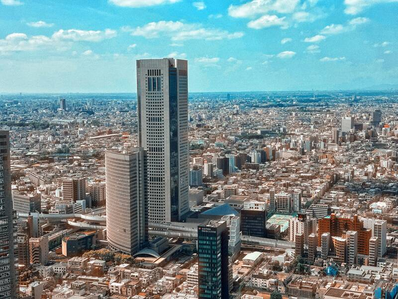
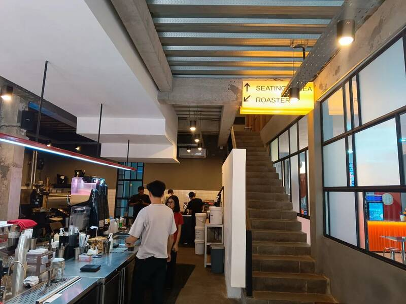
All 21 articles. The receipt runs off the bottom because it is as long as the archive.
21 articles · RSS
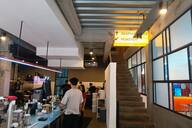
Loske: Good Idea In Theory, Short on Delivery.Reviewed 3.513 Jul 2025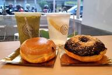
Couvee - Nice Place to Have Work DoneReviewed 4.022 Jun 2025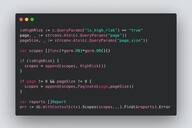
GORM Maximalism: Collection of Tricks When Using Go ORM20 May 2024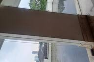
I Want to Try Hard22 Mar 2024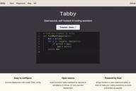
Have Mac? Now You Can Run Free Copilot Alternative with TabbyML12 Mar 2024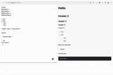
Personal Blog with HTMX + Go: Part 3 - Server-Rendered Markdown11 Mar 2024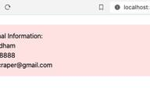
Personal Blog with HTMX + Go: Part 2 - Integrating TailwindCSS18 Oct 2023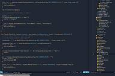
Neovim Presets are Bad for Beginners, Sincerely from a Fellow Beginner14 Oct 2023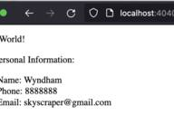
Personal Blog with HTMX + Go: Part 1 - Golang Templating1 Sep 2023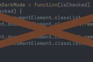
This Blog is Made Without JavaScript (Sort of)1 Sep 2023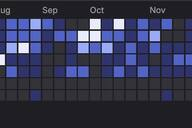
M. Wyndham Haryata Permana - Sr. Full Stack Engineer26 Aug 2023Couvee – Nice Place to Have Work Done, the top of the sheet. The till latches Blog, because an article lives under it.
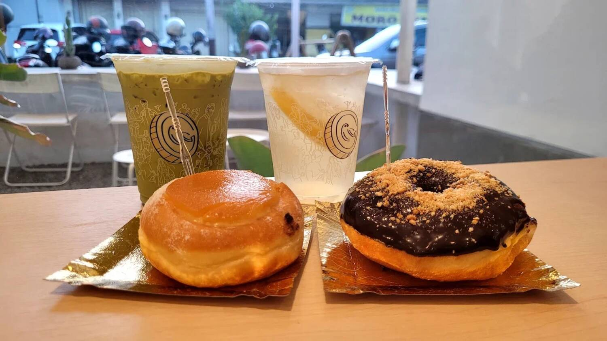
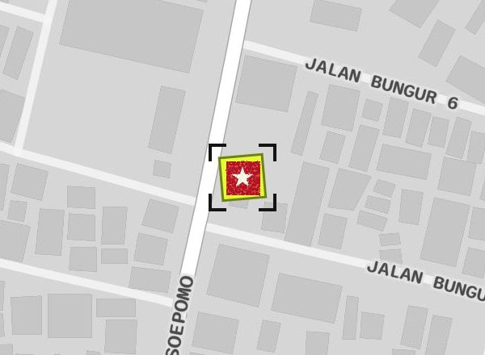
Just this weekend, as I worked on the blog that you’re reading right now, I visited Couvee for the nth time this year.
Why? Well, because for whatever reason, either the vibe, the coffee, or the position of the table and chair always triggers my mood to be very productive.
To be honest, the coffee selection is not that much. It only has “house blend” and has no access to various specialty coffees, and the taste of the coffee is fine, albeit it lands on the sour side of the spectrum.
Other menu selections are also not that many. Several staples such as Americano, Latte, and Cappuccino, followed by some alternative options such as Americano with Lychee syrup, Latte with Manuka Honey, non-coffee options such as Chocolate and Matcha Latte, and some other menus I can’t remember on top of my head.
Yep, you read that right. This small coffee shop, for whatever reason, shares space with another food brand: Kalis. Kalis is a donut brand, and this small spot houses different cashiers and all.
kopimap_print_light.json on R2) with the shop’s chop stamp in crop marks, instead of alidade_smooth and a teardrop. It still loads only when the ticket scrolls into view.### in the MDX) are Big Shoulders 800 at 30px under a 3px rule; ## is 42px under 5px.GORM Maximalism, from its first section. The sheet only; the till and hero are as above.
Using GORM for your production code? still querying models one by one like a cave man? tired of yet another repository method that spell db.Find(&result).Error? This blogpost is for you. This is the collection of many neat tricks that GORM can do where I seldomly seen being used in the wild.
Imagine you have two models that’s related (1-to-many):
type User struct { gorm.Model Name string Email string } type Report struct { gorm.Model Score uint UserID uint }
And you want to fetch user data, but also returning report all at once. Doing it this way is the noob way:
var user User err := db.Find(&user,1).Error // ... var reports []Report err := db.Where("user_id = ?", 1).Find(&reports).Error
Instead, you can declare that User have many Reports and having it preloaded immediately:
var user User
err := db.Preload("Reports").Find(&user,1).ErrorNeat!
BlogImage) stay in colour: a print with a white border and black photo corners, as on Kopimap’s ticket. A caption, when the article gives one, is mono under the print.And yet, the same drug store located at the intersection in the market of Banjarnegara, where people barely visit, still standing strong for all I’ve been alive and able to remember anything.
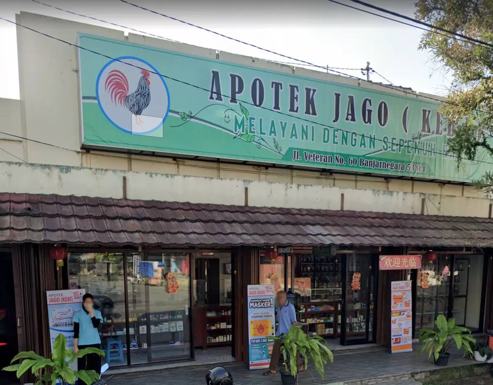
I assume it generates just enough revenue to go by, and all the thing that keep it alive is just “that’s how it always been”.
Under the Couvee sheet, on the counter. Blaze Mast is writing a comment; Optic Lead asked a question and the author answered.
Is this blog made by hand? It looks amazing, also those donuts look amazing....
Author here. Yes! everything here is by hand. Not a framework or anything.
aria-busy, instead of a spinner.minidenticon(seed, 0, 8) instead of full hue), and the alias and date share one mono line with a leader. The message is 16px, up from 10pt.390×844. Home, the top of the Couvee review, and its comments.
Is this blog made by hand? It looks amazing, also those donuts look amazing....
Author here. Yes! everything here is by hand. Not a framework or anything.
The same review by day and by night.
Night is Kopimap’s night counter: the counter goes to #1C1C1C, the papers dim (newsprint #BDBDBD, thermal #D4D4D4, ticket #A9C7BB, nota #D9A0B5), the map goes dark, and three inks darken to hold contrast on dimmed paper: chop to #900B20, ink-2 to #3D3D3D and biro to #1730A6. Nothing changes hue, so Reviewed is red at noon and at midnight. Unlike Kopimap, Marknotes keeps its manual switch: the Night key latches, its LED lights, and the stored dark-mode value and OS default work as today.
Recommendation: tokens only, now. Admin carries more daisyUI than the public site (68 btn, 28 stat, 18 card, 16 join across 33 files, against 32, 0, 12 and 0 in public), and it has one reader. Step 1 maps the Nota palette onto daisyUI’s variables and sets every radius to 0, so admin turns neutral and square without touching its markup. The full pass below is costed separately, and I would not build it until the public pages have shipped.
Which one is better for working, Loske or Couvee?
chart-theme.ts).ShopBlock and the prose rules.Only what Marknotes adds or uses differently. Keys, stamps, cups, receipt rows, ruled fields and the VFD are Kopimap’s and are specified there.
type User struct { gorm.Model }
The comment can’t be empty.
No comments yet. Be the first!
A biro link, ink bold, italic and db.Find(&result).
A quote rules off on the left.
Selected text is the lime marker.
| Name | When | How | Phones and reduced motion |
|---|---|---|---|
| Blog opens | Kopimap’s raster reveal: each row prints in 4 lines of 180ms, left to right, rows 24ms apart | Instant | |
| Post | A comment saves | The nota lifts 6px and the pink drains to thermal white, 500ms; the new slip is that paper | Colour swap |
| Stamp | A slip’s identicon after Post; a moderation decision | Scale 1.3 → .96 → 1 with an ink-in, 160ms | Instant |
| Key | Any press | Down 2px, 60ms | Same |
| Navigation | hx-boost swaps a page | None. The htmx progress bar becomes a 3px ink line along the top edge | Same |
Kopimap’s tokens, unchanged, plus one ground for the page. Contrast is WCAG 2 on the flat paper colour; the grain is not counted.
| Token | Hex | Means in Marknotes | Contrast |
|---|---|---|---|
| ink | #141414 | All text, rules, frames, bold | 13.43 news · 17.05 thermal · 14.51 ticket · 11.44 nota · 10.34 counter |
| ink-2 | #4D4D4D | Fact labels, dot leaders, code comments. Never a line under a heading. | 6.16 news · 7.82 thermal |
| chop | #B80F2A | The author’s mark: Reviewed, Author. Error labels, reversed in white. | 4.88 news · 6.19 thermal · white on chop 6.69 |
| biro | #1E3FD9 | Links, and what you write: the comment you type, your alias | 5.53 news · 7.02 thermal · 4.71 nota |
| signal | #FF5A1F | The main key (Open in Kopimap, Post), lit LEDs, rating cups. Never text. | ink on main key #F04A0E 4.99 |
| marker | #E2FF2E | Selected: ::selection, and the shop’s square on the printed map | ink on marker 16.30 |
| news | #DCDCDC | The front page and every article | see ink |
| thermal | #F6F6F6 | The receipt, comment slips, code printouts, inline code | see ink |
| ticket | #CDEBDF | A Kopimap shop, and nothing else | see ink |
| nota | #FFB8D2 | Writing a comment (and, in a full admin pass, the editor) | see ink and biro |
| counter (new) | #C8 → #BD | The page: brushed steel, a 2-stop grey under the brush and grain tiles | ink 10.34 · colophon #2E2E2E 7.62 |
| graphite / steel / vfd | #262626 / #C6C6C6 / #8FF0D2 | The till and its keys; the VFD only in admin | — |
Night values are in section 9. On night paper: ink 9.81 on news and 12.43 on thermal, chop 4.96, ink-2 5.78 and biro 5.56 on news, biro 4.80 on the night nota.
| Role | Face | Size / line | Weight, case |
|---|---|---|---|
| Masthead | Big Shoulders | 196/.8 desktop · 84 phone | 900, uppercase |
| Article headline | Big Shoulders | 70/.89 · lead 54/.9 · second 31 · phone 42, lead 36, rows 22 | 900, uppercase, balanced wrap |
| Section head ## / ###, Comments, ticket name | Big Shoulders | 42 / 30 / 26 / 32 | 900 / 800, uppercase |
| Stamp | Big Shoulders Stencil | 15 · small 12 | 800, uppercase, +0.09em |
| Article body | Atkinson Hyperlegible Next | 18/1.65 · phone 17/1.6 | 400, bold 700 |
| Columns, comments, receipt titles | Atkinson Hyperlegible Next | 16/1.55 · titles 16/1.3 | 400 · titles 600 |
| Datelines, dates, facts, code | Atkinson Hyperlegible Mono | 13–14 · code 14.5/1.6 | 400, values and keywords 700 |
Nothing is set below 12px. The display face is for names and headlines, never for body sentences.
*, ::before, ::after { border-radius: 0 }, as on Kopimap. Bullets, LEDs, identicons and staples are squares. Curves only appear in type, photos, logos and map geometry.| State | On the receipt | On the front page | On the sheet |
|---|---|---|---|
| Post | Thumbnail, title, date | Print, headline, date | Hero, headline, dateline |
| Review | Small chop: REVIEWED 4.0 | Small chop by the date | The ticket: chop, cup card, score |
| Updated | Nothing | Nothing | Dateline adds “Updated 25 Oct 2026” |
| Current section | The till key latched with its LED lit: Home on /, Blog on /articles and every article, Resume on the resume | ||
| Your unsent comment | Pink nota, biro text | ||
| Author | Red AUTHOR chop and the halftone photo | ||
| Removed / hidden | The slip stays; a black REMOVED or HIDDEN stamp replaces the message | ||
| Keyboard focus | 2px ink outline inside the row | 2px ink outline, 3px offset; VFD cyan on the till | |
Every component the public pages need already exists in Kopimap’s client/src/index.css: .till, .key, .key-signal, .led, .receipt, .tear-b, .leader, .halftone, .stamp, .cups, .ticket, .staple, .nota, .line. They are copied, not shared: two sites do not justify a package.
| daisyUI today | Where | Replacement |
|---|---|---|
| navbar, menu, menu-horizontal, dropdown, swap, theme-controller | Header, HeaderLink | .till with <a class="key" aria-current>; Night is a <button class="key" aria-pressed> in the colophon |
| card, card-body, card-title (12) | BlogPost, index, articles/index, CommentSection | .sheet (newsprint) and .receipt |
| btn and its variants (32) | ShopBlock, CommentForm, CommentItem, ScrollButtons, Header | .key, .key-signal, .key-sm; ScrollButtons is deleted |
| badge (11): open, closed, Author | ShopBlock, CommentItem | .stamp; “open now” becomes words on the Hours line |
| rating, rating-half, mask-star-2 | ShopBlock | .cups |
| avatar, mask-squircle | Avatar.tsx | A square ink frame; the identicon in ink |
| textarea, form-control | CommentForm | .line ruled textarea on .nota |
| loading, loading-spinner | CommentForm | The Post key stays down and reads “Posting…”, aria-busy |
| alert alert-error | CommentSection | White on a chop label |
| skeleton | BlogPost, two island fallbacks | The ticket’s and the slip’s outline in dashed ink, empty |
| divider, footer | BlogPost, CommentTree, Footer | 1.5px ink rule; the colophon |
ARTICLE_PROSE_CLASS | consts.ts, the editor preview | Typography stays; the string drops the colour and brightness modifiers and adds ink, biro and the square bullets |
The @plugin "daisyui" block stays for admin, themed by step 1. If the admin pass is built, it goes then, with the two daisyUI theme blocks.
dark-mode storage key and the inline theme script.Each step ships on its own and leaves the site working.
| # | Step | Ships | Est. |
|---|---|---|---|
| 1 | Dates and tokens | timeZone: "Asia/Jakarta" in FormattedDate. The Nota palette mapped onto daisyUI’s variables (base → news and thermal, primary → signal, accent → biro, error → chop), every radius 0, the steel counter, the three fonts. Every page, admin included, turns neutral and square at once. | 0.5 d |
| 2 | Till and colophon | Header as the till with section-latched keys, Admin and Night to the colophon, ScrollButtons deleted. | 0.5–1 d |
| 3 | Sheet and prose | The article sheet, halftone hero, headline, dateline with the Comments link, prose rules, the one-ink Shiki theme and printout, photo prints, the contribution graph in ink densities. | 1.5 d |
| 4 | Ticket | ShopBlock as Kopimap’s ticket with the printed style and chop marker. The editor preview gets it for free. | 0.5–1 d |
| 5 | Front page and receipt | Home as the front page, Blog as the receipt with halftone thumbnails and the print reveal. | 1 d |
| 6 | Comments | The nota form, slips, ink identicons, the Author chop, Removed and Hidden stamps, the perforated reply line. | 1 d |
| 7 | Night, phones, daisyUI out of public | Night papers and the dark printed map, a pass at 360 and 390px and on a low-end Android, the last public daisyUI classes. | 1 d |
| Total | 6–7 d | ||
| 8 | Admin, optional | Dock till, VFD KPIs, plotted charts, stamp moderation, the nota editor; daisyUI removed. | 3–4 d |
/admin), or kept in the till.